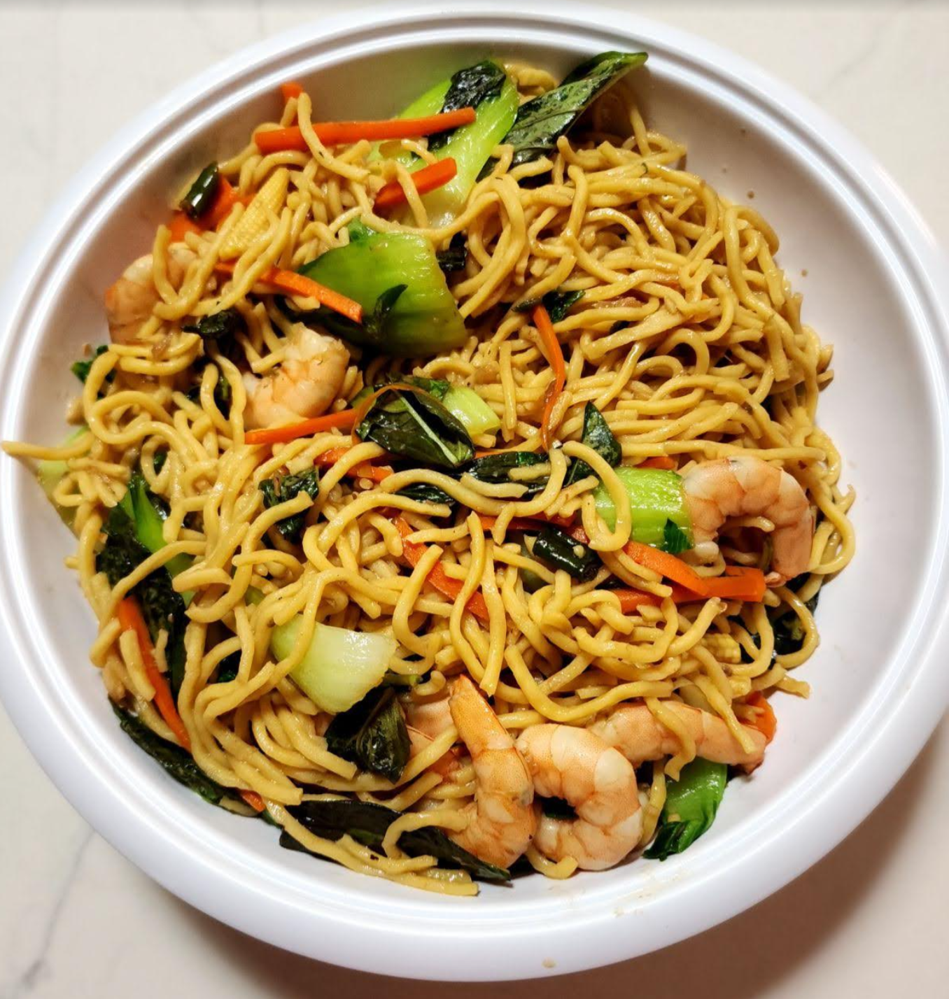

Ingredients
Directions
Timeline
Chef's Notes
Mise en Place
| Step | Direction | Notes |
|---|---|---|
| 1 | Prep Shrimp | Defrost and peel shrimp. Marinate with MSG, white pepper, sugar, and rice wine; set aside. |
| 2 | Par-Cook Pasta | Bring water to a boil and cook spaghetti to about 60% doneness. Drain and reserve 1 C pasta water |
| 3 | Steam Broccoli | Bring water to a boil and steam broccoli 5 minutes; set aside |
| 4 | Prep Veg | Slice baby corn and banana pepper. Pick basil leaves from stems |
| 5 | Make Paste | Peel garlic and add garlic, Thai chilies (3 + 3), and fingerroot to a food processor; process to a paste |
| 6 | Heat Wok | Heat wok until very hot |
| 7 | Mix Sauce | Combine sauce ingredients (including 1 tsp sugar and 1 tsp dark soy) |
| 8 | Start Stir-Fry | Fry garlic paste until fragrant |
| 9 | Add Protein & Veg | Add broccoli and shrimp with some of the sauce; toss to coat |
| 10 | Add Pasta | Add spaghetti, banana pepper, and remaining sauce; toss to heat through and season pasta and vegetables |
| 11 | Finish | Remove from heat, stir in basil, finish with white pepper, adjust seasoning, and serve immediately |